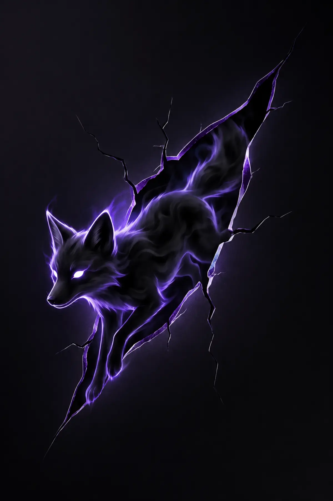

HYPERSPACE KIDS
HK-0043
VOID FOX
EPIC · COMPANION
Three Genesis benchmarks. No tilt. No fake depth. Artwork, hierarchy and material must earn the pull while perfectly still.
The frame-break benchmark. One iconic companion, rendered as a complete collectible before any digital material is applied.

A collectible first. Effects are currently disabled.
Ten frozen collector profiles. Nine card faces: three Hyperspace studies and six premium TCG references. One forced choice per profile. Faces remain intact; prices and sales metadata stay out.